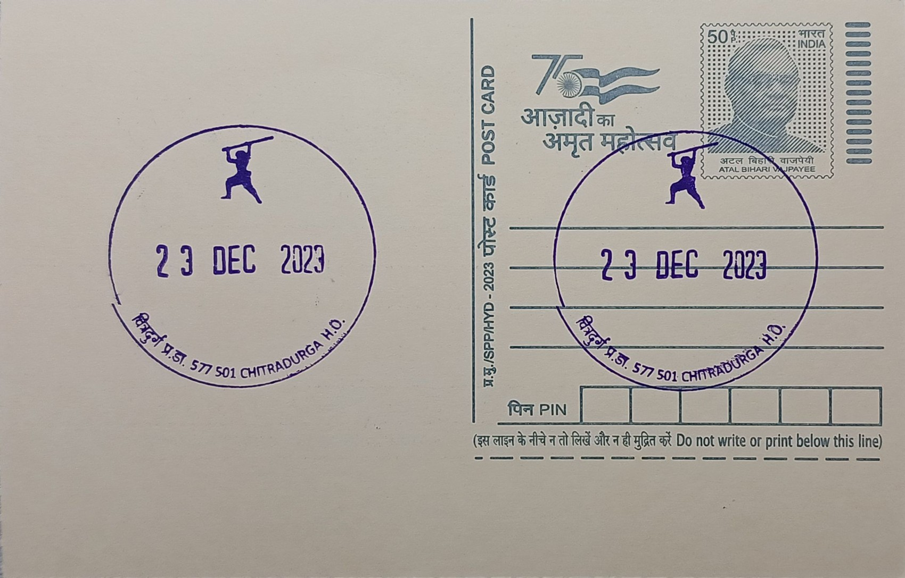

Onake Obavva
ಒನಕೆ ಓಬವ್ವ


The name Onake Obavva, by which this 18th-century Chitradurga woman is remembered in Karnataka folklore, derives directly from the household implement she is said to have wielded in defence of her fort: an onake, the long wooden pestle used across rural Karnataka for pounding grain in a mortar. She is not recorded under any other formal name in surviving accounts, and her identity in popular memory is inseparable from this single object and the act associated with it. According to tradition she belonged to the Holaya community and was married to a soldier posted as a sentry at one of the watchtowers of Chitradurga fort, then under the rule of the Nayaka chiefs, a detail that situates her firmly among the ordinary garrison households rather than the fort's military elite.
Within the historical memory of Chitradurga, Onake Obavva occupies the place of a folk heroine whose significance is civic and commemorative rather than religious or architectural. She is cited as an example of individual courage during the conflict between the Chitradurga Nayakas, under their last ruler Madakari Nayaka IV, and the expanding Mysore state under Hyder Ali in the late 1770s, a period in which Chitradurga's fortifications, popularly called Elusuttina Kote or the fort of seven encircling walls, were considered among the most formidable in the region. Her story is taught widely in Karnataka schools and referenced in regional histories of the Hyder Ali campaigns, giving her a recognised place in the state's popular historiography of resistance to Mysore expansion.
Accounts describe the episode as occurring when her husband, on sentry duty at a narrow rock-cut opening in the fort wall, stepped away briefly and Obavva, going to fetch water nearby, spotted Mysore soldiers attempting to squeeze through the crevice one at a time under cover of night. Armed only with the onake she had been carrying or had at hand, she is said to have struck down each soldier as he emerged through the gap, moving the bodies aside so as not to alert the others waiting to follow, repeating this until the alarm was eventually raised and the garrison mobilised. The specific number of soldiers killed varies between retellings, generally ranging from a handful to several dozen, reflecting the nature of the account as orally transmitted folklore rather than a contemporaneous official record.
The physical trace most directly tied to the legend is the rock crevice itself, still pointed out within the fort complex and known locally as Onake Obavvana Kindi, which remains one of the more visited features for tourists following the fort's defensive walls and watchtowers. In the town of Chitradurga, her memory has also been given tangible civic form through a sculpture by artist Ashok Gudigar installed near the District Commissioner's office, and through the naming of the Onake Obavva Stadium, both of which function as public points of reference for her story well beyond the fort walls.
Formal state recognition of the legend has grown in recent years: the Government of Karnataka instituted November 11 as Onake Obavva Jayanti starting in 2021, marking an annual observance that includes programs in schools and government institutions across the state highlighting her story alongside other regional figures of resistance. Chitradurga Fort itself, where the crevice associated with her stand is preserved, is maintained as a protected monument under the Archaeological Survey of India and draws visitors who come specifically to see the narrow passage named for her alongside the fort's better-documented bastions and gateways.
| Date of Introduction | January 21, 2017 |
|---|---|
| Address | Senior Postmaster, |
| Chitradurga HO, | |
| Chitradurga (dt.), Karnataka - 577501. |